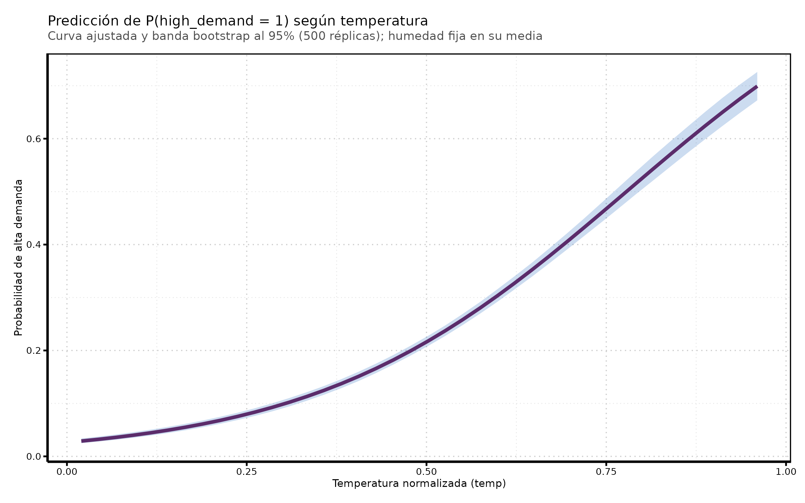
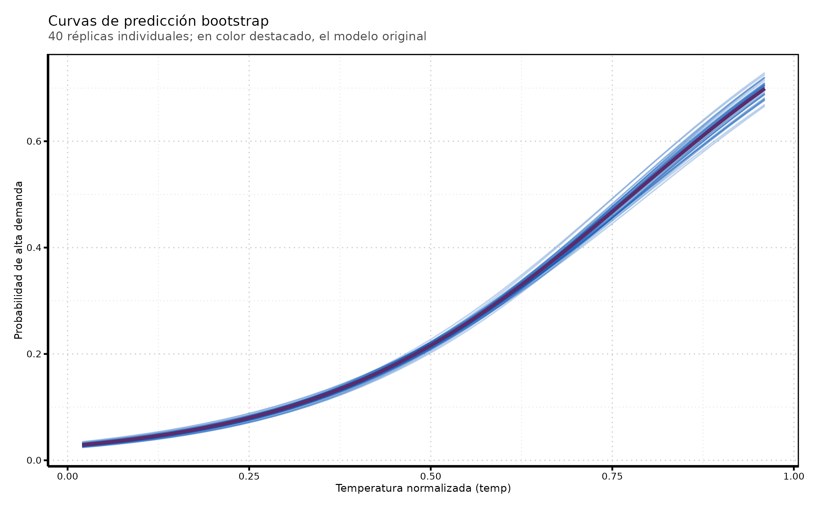

La salida de glm() ya trae errores estándar. Provienen de la teoría asintótica de máxima verosimilitud: la matriz de información evaluada en \(\hat{\beta}\) entrega \(\widehat{\text{SE}}(\hat{\beta}_k)\), y el intervalo de Wald al 95% es \(\hat{\beta}_k \pm 1.96 \cdot \widehat{\text{SE}}(\hat{\beta}_k)\).
Code
# Intervalo de Wald (simetría impuesta por la aproximación Normal)tidy(logit_model, conf.int =TRUE, conf.method ="Wald")
Estas fórmulas funcionan bien para los coeficientes. El problema aparece cuando la cantidad de interés es una función no lineal de ellos: una probabilidad predicha, una diferencia entre dos probabilidades predichas, un efecto marginal promedio. Ahí la aproximación analítica requiere el método delta (y sus supuestos) o derechamente no tiene forma cerrada conveniente.
3. Bootstrap: la intuición
El bootstrap aproxima la distribución muestral de un estimador sin depender de fórmulas analíticas. La idea:
Partimos de la muestra original, que tratamos como aproximación de la población.
Generamos nuevas muestras del mismo tamaño, seleccionando casos al azar con reemplazo. Son las muestras bootstrap.
Ajustamos el modelo en cada muestra bootstrap y calculamos la cantidad de interés (un coeficiente, un odds ratio, una predicción, una diferencia de predicciones).
La distribución de esas cantidades a lo largo de muchas réplicas aproxima la distribución muestral. De ahí salen errores estándar (su desviación estándar) e intervalos de confianza (sus percentiles).
Note
La clave es el paso 3: el costo de agregar una cantidad nueva es prácticamente cero. Si sabemos calcularla en la muestra original, sabemos calcularla en cada réplica.
4. Un solo bootstrap, varias cantidades
En vez de repetir el procedimiento una vez por cantidad, ajustamos el modelo una sola vez por réplica y devolvemos todo lo que nos interesa:
los coeficientes\(\hat{\beta}\),
la curva de probabilidades predichas sobre una grilla de temp (con hum fija en su media),
la diferencia de probabilidad predicha entre un día caluroso (p90 de temp) y uno frío (p10).
Code
set.seed(20260921)R <-500# número de réplicas bootstrap# Grilla de predicción: variamos temp, mantenemos hum en su mediatemp_grid <-seq(min(bikedata$temp), max(bikedata$temp), length.out =40)hum_fija <-mean(bikedata$hum)grid_pred <-tibble(temp = temp_grid, hum = hum_fija)# Contraste de interés: p90 vs p10 de temperaturatemp_p10 <-quantile(bikedata$temp, 0.10)temp_p90 <-quantile(bikedata$temp, 0.90)grid_contraste <-tibble(temp =c(temp_p10, temp_p90), hum = hum_fija)ajustar_logit <-function(d) {glm(high_demand ~ temp + hum, data = d, family =binomial(link ="logit"))}# Todo lo que queremos de UNA réplica bootstrapcantidades <-function(m) { p_contraste <-predict(m, newdata = grid_contraste, type ="response")list(coefs =tibble(term =names(coef(m)), estimate =unname(coef(m))),preds =tibble(temp = temp_grid,pred =unname(predict(m, newdata = grid_pred, type ="response"))),delta =unname(p_contraste[2] - p_contraste[1]) )}# rsample::bootstraps guarda índices, no copias de los datosboots <-bootstraps(bikedata, times = R)boot_res <- boots %>%mutate(q =map(splits, ~cantidades(ajustar_logit(analysis(.x)))))# Desempaquetamos cada cantidad en su propio data frameboot_coefs <- boot_res %>%transmute(id, coefs =map(q, "coefs")) %>%unnest(coefs)boot_preds <- boot_res %>%transmute(id, preds =map(q, "preds")) %>%unnest(preds)boot_delta <- boot_res %>%transmute(id, delta =map_dbl(q, "delta"))
Qué hace cada pieza:
bootstraps(bikedata, times = R) genera 500.000 remuestreos con reemplazo; cada fila de boots es un split.
analysis(split) extrae la muestra bootstrap correspondiente.
map() aplica cantidades() a cada réplica; unnest() apila los resultados.
Nótese que no usamos apparent = TRUE: esa opción agrega la muestra original como una réplica más, lo que contamina los percentiles que usaremos como intervalo.
5. Bootstrap para los coeficientes: ¿coincide con Wald?
Antes de usar el bootstrap donde la teoría no llega, conviene validarlo donde sí llega. Con \(n =\) 8645.000 observaciones, los dos métodos deberían dar prácticamente lo mismo.
Code
wald <-tidy(logit_model) %>%transmute(term, estimate,se_wald = std.error,wald_low = estimate -1.96* std.error,wald_high = estimate +1.96* std.error)bs <- boot_coefs %>%group_by(term) %>%summarise(se_boot =sd(estimate),boot_low =quantile(estimate, 0.025),boot_high =quantile(estimate, 0.975),.groups ="drop")left_join(wald, bs, by ="term") %>%kable(digits =3, caption ="Errores estándar e intervalos al 95%: Wald vs bootstrap")
Errores estándar e intervalos al 95%: Wald vs bootstrap
term
estimate
se_wald
wald_low
wald_high
se_boot
boot_low
boot_high
(Intercept)
-2.059
0.125
-2.304
-1.814
0.111
-2.267
-1.833
temp
4.635
0.153
4.335
4.934
0.147
4.349
4.911
hum
-2.404
0.143
-2.686
-2.123
0.144
-2.663
-2.103
Code
boot_coefs %>%filter(term !="(Intercept)") %>%ggplot(aes(x = estimate)) +geom_density(fill = palette[["series-1"]], colour = palette[["series-1"]], alpha =0.15) +geom_vline(data =filter(wald, term !="(Intercept)"),aes(xintercept = estimate),colour = palette[["series-2"]], linewidth =1.1) +geom_vline(data =filter(wald, term !="(Intercept)"),aes(xintercept = wald_low),colour = palette[["series-2"]], linetype ="dashed") +geom_vline(data =filter(wald, term !="(Intercept)"),aes(xintercept = wald_high),colour = palette[["series-2"]], linetype ="dashed") +facet_wrap(~ term, scales ="free") +labs(title ="Distribución bootstrap de los coeficientes",subtitle ="Líneas: estimación puntual e intervalo de Wald al 95%",x ="Coeficiente", y ="Densidad")
La densidad bootstrap se superpone casi exactamente con el intervalo de Wald. Es el resultado esperado: con muestra grande y un parámetro que entra linealmente en el predictor, ambos caminos llevan al mismo lugar. El bootstrap no es mejor acá — es simplemente otra ruta hacia la misma respuesta.
6. Donde el bootstrap se vuelve necesario: la curva de predicción
La probabilidad predicha \[\hat{p}(\text{temp}) = \frac{1}{1 + e^{-(\hat{\beta}_0 + \hat{\beta}_1\,\text{temp} + \hat{\beta}_2\,\overline{\text{hum}})}}\] es una función no lineal de los coeficientes. Su error estándar no se lee de la tabla de glm(). Con bootstrap, en cambio, basta tomar percentiles punto a punto.
Code
# Intervalos punto a punto sobre la grilla de tempci_preds <- boot_preds %>%group_by(temp) %>%summarise(ci_low =quantile(pred, 0.025),ci_high =quantile(pred, 0.975),.groups ="drop")# Estimación puntual: el modelo ajustado en la muestra ORIGINALpred_hat <- grid_pred %>%mutate(pred =predict(logit_model, newdata = ., type ="response"))ggplot(ci_preds, aes(x = temp)) +geom_ribbon(aes(ymin = ci_low, ymax = ci_high),fill = palette[["series-1"]], alpha =0.20) +geom_line(data = pred_hat, aes(y = pred),colour = palette[["series-2"]], linewidth =1.2) +labs(title ="Predicción de P(high_demand = 1) según temperatura",subtitle =paste0("Curva ajustada y banda bootstrap al 95% (", R," réplicas); humedad fija en su media"),x ="Temperatura normalizada (temp)",y ="Probabilidad de alta demanda")

Dos lecturas del gráfico:
La línea es la estimación puntual del modelo original; la banda es el intervalo bootstrap al 95% en cada valor de temp.
La banda no tiene ancho constante: se abre en los extremos del rango de temp, donde hay menos observaciones y por tanto menos información.
Warning
Es una banda punto a punto, no una banda de confianza simultánea: garantiza 95% de cobertura para cada temp por separado, no para la curva completa a la vez.
7. La misma información, otra mirada: curvas individuales
En vez de resumir con percentiles, podemos dibujar directamente las curvas bootstrap. Esto hace visible de dónde viene la banda anterior.
Code
set.seed(7)ids_muestra <-sample(unique(boot_preds$id), 40)boot_preds %>%filter(id %in% ids_muestra) %>%ggplot(aes(x = temp, y = pred, group = id)) +geom_line(alpha =0.25, colour = palette[["series-1"]], linewidth =0.5) +geom_line(data = pred_hat, aes(x = temp, y = pred), inherit.aes =FALSE,colour = palette[["series-2"]], linewidth =1.2) +labs(title ="Curvas de predicción bootstrap",subtitle ="40 réplicas individuales; en color destacado, el modelo original",x ="Temperatura normalizada (temp)",y ="Probabilidad de alta demanda")

Cada línea tenue es el modelo ajustado en una muestra bootstrap distinta. Donde las curvas se aprietan hay más certeza; donde se abren en abanico, menos. Es exactamente la misma información de la sección anterior, sin el paso de resumen.
8. Bootstrap para un contraste: día caluroso vs día frío
Cerramos con la cantidad más difícil de tratar analíticamente y la más fácil de comunicar: cuánto sube la probabilidad de alta demanda al pasar de una temperatura de percentil 10 a una de percentil 90.
Interpretación directa: pasar de un día frío a uno caluroso (manteniendo la humedad en su media) aumenta la probabilidad de alta demanda en 0.386, con un intervalo al 95% de [0.365, 0.409]. Ningún coeficiente de la tabla original dice esto; el bootstrap lo entrega sin álgebra adicional.
9. Conclusión
El bootstrap y la inferencia analítica coinciden donde ambos aplican (sección 5). Eso es una prueba de sanidad, no una redundancia.
Su ventaja aparece con cantidades no lineales —probabilidades predichas, contrastes, efectos marginales— donde la fórmula analítica es incómoda o inexistente.
Un mismo conjunto de réplicas sirve para todas las cantidades a la vez: el costo está en ajustar los modelos, no en la cantidad que se calcule después.
Banda de intervalos y curvas individuales son complementarias: la primera resume, la segunda muestra la variabilidad cruda.
Precaución: el bootstrap por casos supone observaciones independientes. En bikedata, que son horas consecutivas, hay autocorrelación temporal — los intervalos de esta práctica son, por tanto, optimistas.
10. Ejercicios
Repita la sección 6 fijando hum en su percentil 10 y en su percentil 90 en vez de la media. ¿Cambia el ancho de la banda?
Calcule el intervalo bootstrap para el odds ratio\(e^{\hat{\beta}_{\text{temp}}}\) y compárelo con exp(confint(logit_model)). ¿Por qué el intervalo bootstrap del odds ratio no es simétrico en torno a la estimación?
Baje R de 500 a 50 y vuelva a construir la banda de la sección 6. ¿Qué parte del resultado se vuelve inestable primero: el centro o los bordes?
Agregue factor(workingday) al modelo y estime, con bootstrap, la diferencia de probabilidad predicha entre día hábil y no hábil a temperatura media.